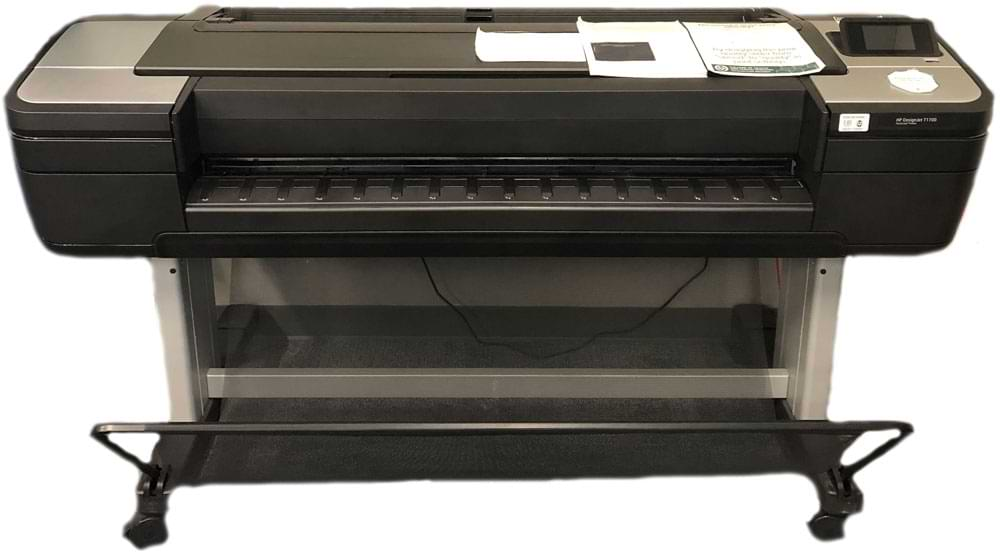

About our Computer Labs
Students in the College of Health and Human Sciences pay a technology fee every semester. This fee ensures that state-of-the-art hardware and software are available to those who need it, our labs are staffed, and improvements are constantly being made. The tech fee is invested with the general oversight of the Dean’s Leadership Council of CHHS.
Each lab has at least one space that can be reserved by instructors for classroom usage. These spaces are designed to facilitate collaboration while modeling industry standards. Whether your needs lie in construction, interior design, education, or dietary analysis, our labs have technology available to you that is representative of that found in the private sector.
Announcements
The Gifford, Preconstruction Center, and Richardson Design Center labs are open for 24-hour access with a RamCard. All CHHS computer labs have a lab operator available 7:30am-8:30pm Monday through Friday, with varying hours on the weekend.
All labs, with the exception of Education 220, have remote access to computers. Please see here for a list of remote-only computers accessible via Microsoft Remote Desktop.